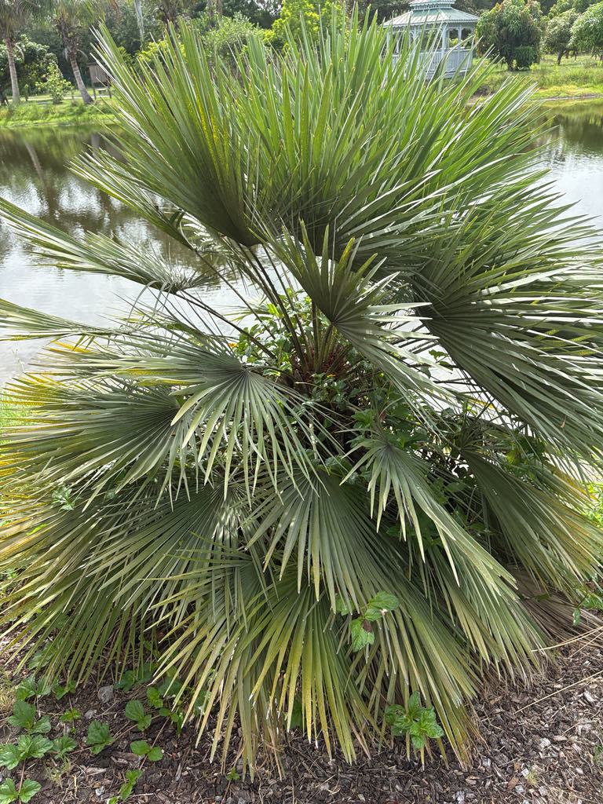

- This is the only palm tree native to Europe — and it holds the record for the most northerly wild palm stand on Earth, with a native population in Genoa, Italy, at 44 degrees north latitude.
- A single highly specialized weevil, Derelomus chamaeropsis, is its primary pollinator in the wild. The weevil lays its eggs in the male flower stalks, the larvae develop there, and the adults emerge dusted in pollen — ready to carry it to the next palm. It is one of the more unusual plant-insect partnerships in the palm family.
- The palm is usually dioecious — male and female flowers on separate plants — but individuals occasionally carry flowers of both sexes. You genuinely cannot tell the sex of a plant until it blooms.
- In its Mediterranean scrublands, this palm shrugs off wildfires by re-sprouting from underground rhizomes. Centuries of burning have not put a dent in it.
The European Fan Palm is native to the western Mediterranean Basin — from the Atlantic coasts of Portugal and Spain east through southern France, Italy, and the islands of Sicily, Sardinia, and the Balearics, and south across the water into Morocco, Algeria, and Tunisia. It grows on rocky hillsides and coastal scrublands where soils are thin and summers are long and dry.
It is the sole species in the genus Chamaerops, making it a monotypic genus with no close relatives in cultivation. The genus name comes from the Greek for 'ground shrub,' and the species epithet humilis is Latin for 'low' or 'dwarf' — both names simply describing how the plant looks in its native habitat, where poor soils keep it compact.
The species has been in cultivation outside its home range for centuries and arrived in Florida ornamental horticulture as part of the broader wave of Mediterranean plants introduced in the 20th century. UF/IFAS includes it on the Florida-Friendly Landscaping plant list and recommends it for Central and South Florida landscapes.
- The size range of this palm is almost entirely a story about soil. On the thin, rocky, sun-baked slopes of its Mediterranean home, poor conditions keep it stunted under five feet — a genuine ground-scrub. Bring that same plant to a Florida garden with decent soil and regular moisture, and the ceiling rises to fifteen feet or more.
- No separate varieties account for the difference; it is simply the same species responding to what the ground offers.
- The palm is remarkably fire-adapted for a species from a seasonally dry landscape. Underground rhizomes survive burns that kill the aboveground stems, and new shoots push up quickly from the base afterward. This resilience has made it one of the most persistent woody plants across Mediterranean scrublands that have been periodically burned for agriculture for thousands of years.
- Across its Mediterranean range the plant has a long record of practical use. Leaf fibers were harvested on a significant commercial scale in North Africa for cordage, brooms, brushes, and basketry. The tender apical bud has been eaten as a vegetable in several countries — the husk called 'higa' in southern Spain, young suckers in Italy, and fruit in Morocco.
- None of these are uses a visitor should attempt; they are part of the plant's cultural biography, not a foraging recommendation.
- Chamaerops humilis received the Royal Horticultural Society's Award of Garden Merit, and it is one of the few palms that performs well in containers — remaining compact, tolerating neglect, and surviving considerable cold.
In its home range, this palm supports a genuinely unusual pollination system. The palm flower weevil Derelomus chamaeropsis is its primary — and highly specific — pollinator: adults shelter and feed in the inflorescences, females lay eggs on male flower stalks where the larvae develop, and emerging adults carry pollen to the next plant.
This is a nursery pollination mutualism — the same ecological strategy seen in figs and yuccas — though here it involves a small weevil rather than a wasp or moth.
In Florida, that specialist weevil is entirely absent. Without its dedicated partner, the palm relies on wind and whatever generalist insects happen to visit the small yellow spring flowers. Female plants in fruit produce small clusters of yellowish to brownish drupes that may occasionally be taken by birds.
Because this palm shares no evolutionary history with Florida's native fauna — it is a Mediterranean introduction with no co-evolved local partners — its wildlife value here is genuinely modest.
Usually dioecious — male and female flowers on separate individuals — though occasional plants bear flowers of both sexes. The mystery of which sex a plant is cannot be solved until it blooms for the first time: short, densely branched, yellow inflorescences emerge nestled tightly between the leaf bases in spring, typically April through early summer in Florida, and that is your first real clue.
Female plants produce small clusters of date-like drupes, roughly half an inch to an inch long, that ripen from yellow-green to orange-brown. Each contains a single hard seed. Fruit is not a food source at this park.
Palmate (fan-shaped), deeply divided into 10 to 20 stiff, pointed segments that radiate from the tip of the petiole. Leaf color ranges from green to silvery blue-green depending on the individual. Each frond is held on a petiole armed with stiff, sharp, forward-pointing teeth — the plant's most reliable and most hazardous field mark.
Multiple short trunks grow from a shared base, densely clothed in dark brown fibrous material and old leaf bases. Trunks are slow to elongate; a well-established clump may carry several trunks of different heights and ages. Individual trunks can eventually reach 20 to 25 cm in diameter. By removing suckers over time, a single-trunk form can be trained.
Start by looking down at the base: multiple heavily fibrous trunks rise from a shared root mass as a dense, mounded clump — nothing like a single tall palm. Then run your eye up to the petioles, the leaf stalks, and you will see rows of stiff, sharp, forward-angled teeth; they are not subtle.
The fronds themselves fan out in a circle, deeply cut into pointed segments, ranging from deep green to a cool silver-green. If the plant is flowering, look for short, tight yellow clusters nestled between the leaf bases.
If a female plant is in season, peer into the center of the clump at that same level — small clusters of yellowish to brownish, date-like drupes, ripening from yellow-green to orange-brown, are the clearest proof you have found a female.
The petioles carry rows of stiff, sharp, forward-pointing teeth that can puncture skin — wear gloves when working close to the fronds, and keep children from running their hands along the leaf stalks. The plant has no known toxicity to people or pets.
Parts of this palm do have a history of traditional food use across the Mediterranean — the tender apical bud, young suckers, and fruit — but harvesting the bud kills the growing tip, and none of these are foods to sample casually from a garden plant.
UF/IFAS notes that the spiny petioles make this palm useful as a low barrier or screen when planted closely — three to five feet apart — an application that suits its naturally dense, clumping growth. The spines are real; this is one case where the ornamental and the practical overlap with a caution.
A glaucous-leaved variety from the Atlas Mountains of Morocco grows at elevations up to about 1,500 meters, where intense high-altitude sun triggers the plant to coat its fronds in a heavy layer of wax — and that wax is exactly what gives the leaves their striking silvery, blue-gray tint. It is somewhat more cold-hardy than the standard green form. In horticulture it is most often sold as var.
cerifera or the 'Blue Mediterranean Fan Palm,' though the accepted botanical name is var. argentea.


- © Randall Carter (CC-BY-NC), via iNaturalist